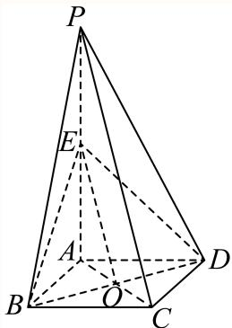

01 【来源：青浦26一模·1】
查看所属专题已知集合 ，，则 ______。
答案与解析
答案
{x|-1≤x≤0}
解析
[分析]根据交集的知识求得正确答案.
[详解]依题意，
所以
故答案为：
整卷阅读 · 教师版 · 21 题
按来源题号排列；内容来自分类汇编，仍需回源核对。
没有找到匹配题目。
已知集合 ，，则 ______。
{x|-1≤x≤0}
[分析]根据交集的知识求得正确答案.
[详解]依题意，
所以
故答案为：
不等式 的解集为______。
(−2,1)
分式不等式 等价于 。解得 ，故解集为 。
若复数 ，则 ______。
[分析]先利用复数的除法运算化简，再结合复数的模的定义计算.
[详解] ，则 故答案为：
的展开式中的常数项为______（用数字作答）。
展开式通项为 。常数项要求 ，故 ，系数为 。
设等差数列 的前 项和为 ，若 ，，则 ______。
6
设公差为d，由条件，根据等差数列的项与前n项和的基本量运算，求出 即可求得答案.
设等差数列 的公差为d,
由 ，可得 ，解得
则
故答案为：6.
现有 名学生站成一排，若学生甲不站两端，则不同站法共有______种（用数字作答）。
72
学生甲在中间3个位置之一，其余4人任意排列，故站法数为 。
若曲线 与直线 有两个公共点，则 的取值范围是______。
(0,1)
当 时， 严格递减，值域为 ；当 时， 严格递增，值域为 。
故水平直线 恰有两个交点，当且仅当 。
如图，在四面体 中， 为 的中点，，且 为 的中点。设 ，，，用 表示 ，则 ______。

由 为 中点，。
又 ，故 为 中点，所以 。
已知圆柱和圆锥的底面半径相同，侧面积也相等，且它们的高均为 ，则圆锥的体积为______。
设公共半径为 ，圆锥母线为 。
侧面积相等给出 ，得 ，所以 。
圆锥体积为 。
设 为圆 上的动点， 是圆 的切线，且 ，则点 的轨迹方程是______。
半径 垂直切线 ，故 。反之，圆心距为 的任意点在圆外，其切线长均为1。因此轨迹恰为 。
已知函数 （），若 仅存在唯一整数解，则 的取值范围为______。
当 时，。
整数解只可能为 ，此时 令 ，函数 在 严格递增（导数为 ）。
因此恰有一个整数解必须恰好纳入 而不纳入 ，即
在平面直角坐标系中， 为坐标原点。已知点 ，，，若 ，，则向量 在向量 方向上的数量投影的取值范围是______。
由双曲线定义，点 在 的右支上。
令 ，则所求数量投影为 。
因为 在以 为圆心、半径1的圆上，对固定 ，该投影取遍 。
而 随 连续取遍 。
合并这些区间，得所求范围 ，两端均不能取到。
在空间中，“两条直线平行”是“这两条直线没有公共点”的（ ）。
A. 充分非必要条件 B. 必要非充分条件
C. 充要条件 D. 既非充分也非必要
A
直接由平行直线及异面直线的定义判断充分性及必要性即可.
“两条直线平行”能推出“这两条直线没有公共点”，满足充分性；“两条直线没有公共点”不能推出“两条直线平行”，
两条直线可能异面，不满足必要性，故“两条直线平行”是“这两条直线没有公共点”的充分非必要条件.
故选：A.
抛掷一枚质地均匀的骰子一次，设“出现的点数为偶数”为事件 ，“出现的点数大于 ”为事件 ，则下述正确的是（ ）。
A. 与 对立
B. 与 互斥
C. 与 相互独立
D.
C
，所以 ，满足独立条件，C正确。
交集非空，因此不互斥也不对立；，D也错误。
对于实数 ，定义集合 ，集合 的元素个数为 ，给出下列说法：
①存在 ，使得 ；
②存在 ，使得 ；
③存在 ，使得 ；
④存在 ，使得 。
其中正确的说法有（ ）个。
A. B. C. D.
C
由 及半角公式，半角正弦的可能值为 这些符号均可通过解的 周期移动达到。
当 ，两组绝对值重合，恰有2个值；当 ，为 ，恰有3个值；当 ，两组非零且绝对值不同，恰有4个值。
因此不可能有1个值，②③④正确，选C。
如图所示，水平地面上插有两根杆子 和 ， 所在直线垂直于地面且 米， 所在直线与地面斜交。小明有一把卷尺，他在某时刻分别测出杆子 和 在阳光下影子的长度，称为一次操作。小明可以在白天的不同时刻进行多次操作。假设阳光为平行光，正午时分 的影子长度为 ，则下列说法正确的是（ ）。

A. 为求出 的长度，小明至少需要进行 次操作
B. 为求出 的长度，小明至少需要进行 次操作
C. 为求出 的长度，小明至少需要进行 次操作
D. 无论进行多少次操作，小明都不能求出 的长度
原答案 B 存疑；若可选方向相反且与竖直方向成 的两次光照，则应选 A。
设斜杆的水平分量为 、竖直高度为 ，则杆长满足 。
若两次光照的水平投影方向相反、与竖直方向均成 ，直立杆的影长均为 米，斜杆影长 满足 因此只需这两次操作便有 ；一次操作一般不能唯一确定杆长。
在允许上述对称光照的模型下应选 A。
原解析写出 后，以“有三个未知数”直接推出至少测三次，这不能排除针对杆长这一组合量的两次测量方法。
题面仅说明平行光及正午影长为零，没有明确可选光照方向随时间的关系；故原答案 B 的充分依据不足，需核对命题约定，不能无条件沿用。
已知直线 是函数 （）的一条对称轴。
（1）求函数 的解析式。
（2）设函数 ，求 在 上的最大值和最小值。
最大值为√2，最小值为-1
（1）对称轴条件给出 ，故 。结合 ，得 。
（2） 当 ，角 。故最大值为 （），最小值为−1（）。
如图，四棱锥 的底面是边长为 的正方形，侧棱 底面 ，且 ， 是侧棱 的中点。

（1）求证： 平面 。
（2）求证：平面 平面 。
证明见解析
证明见解析
（1）设对角线 交于 。
正方形对角线互相平分，所以 为 中点；又 为 中点，在 中有 。
因 平面 ，且 不在该平面内，故 平面 。
（2） 底面，故 ；正方形又有 。
是平面 内相交直线，所以 平面 。
又 平面 ，故两平面垂直。

随着手机和网络的普及，外卖行业得到迅速发展。某外卖平台为了解某地区用户对其提供的服务的满意度，随机调查了 个用户，得到用户的满意度评分，系统自动将评分按从大到小顺序排列如下：
| 用户编号 | 评分 | 用户编号 | 评分 | 用户编号 | 评分 | 用户编号 | 评分 | 用户编号 | 评分 |
|---|---|---|---|---|---|---|---|---|---|
| 01 | 97 | 09 | 88 | 17 | 83 | 25 | 79 | 33 | 76 |
| 02 | 96 | 10 | 88 | 18 | 83 | 26 | 79 | 34 | 75 |
| 03 | 95 | 11 | 86 | 19 | 82 | 27 | 78 | 35 | 74 |
| 04 | 93 | 12 | 86 | 20 | 82 | 28 | 78 | 36 | 74 |
| 05 | 92 | 13 | 85 | 21 | 81 | 29 | 78 | 37 | 73 |
| 06 | 91 | 14 | 85 | 22 | 81 | 30 | 77 | 38 | 72 |
| 07 | 89 | 15 | 84 | 23 | 81 | 31 | 76 | 39 | 66 |
| 08 | 89 | 16 | 84 | 24 | 80 | 32 | 76 | 40 | 63 |
（1）求这组数据的极差和第 百分位数。
（2）若从这 个用户中抽取一个容量为 的样本，有一个数据不小心丢失了，抽到的其他 个用户的评分分别为 ，且这 个数据的平均数 。记这 个数据的方差为 ，若用户的满意度评分在区间 ，则满意度等级为“A级”。从这 个数据里面任取 个，求恰有 个满意度等级为“A级”的概率。
（3）平台为拓展客流，开发了一个新的评价系统。把（2）中样本的平均数和方差作为老评价系统的数据，且老系统的样本容量占两个系统所有样本容量的 ，新系统得出的评分平均数为 分，方差为 。据此计算新老系统所有评分的方差。
极差为 34，第95百分位数为 95.5
27
（1）极差为 。，故第95百分位数为升序第38、39项均值 。
（2）由平均数83，丢失值为 。
方差为 。
A级区间为 ，其中有 共5个数据。
所求概率为
（3）新、老样本量比为2∶1，总平均为 。合并方差为
已知椭圆 （）的左、右焦点分别为 ， 为 上两个不同的点，记 的周长和面积分别为 和 。
（1）若 的离心率为 ，求 的值。
（2）若满足 的点 有且仅有两个，求 的取值范围。
（3）若 ，是否存在点 使得 和 同时取到最大值？若存在，求出直线 的方程；若不存在，说明理由。
(8, 12)
不存在，理由见解析.
（1），所以 ，得 。
（2）焦点距离范围为 。恰有两点的条件为 ，故 。
（3）此时椭圆为 ，焦点 、。
由椭圆定义和三角不等式， 等号要求弦 经过 ，且 在弦内。
设非水平弦为 ，联立椭圆可得 若周长最大，则 。
令 ，有 ；水平过 的弦在x轴上，面积为0，同样不超过该界。
但取弦 ，即 ，它与椭圆有两个不同交点，且 因此任何周长最大三角形都不可能使面积同时最大，所求点不存在。
已知函数 定义域为 ，对于实数 ，定义集合 ，。
（1）若 ，求 和 。
（2）给定实数 ，若 满足对任意 ，均有 ，求 的取值范围。
（3）若集合 满足：，则称 和 互为对称集。证明：“函数 为偶函数”的充要条件是“对任意实数 ， 与 互为对称集”。
, L1 = {x |x ≤ −1或 x = 1}
证明见解析
（1）；。
（2）条件等价于：所有 都有 。
必要性来自 ；反之，若该不等式成立， 时 且 ，故 。
对 ，有 ，在 、 上递增，在 上递减，。
若 ，条件成立。
若 ，必须且只须 ；结合单调性及 ，得 。
故 。
（3）若 为偶函数，则 故两集合互为对称集。
反之，对任意 ，由 与 互为对称集，取点 ，得到 两边的位置条件自动满足，因此等价于 两个相反方向的不等式具有相同真值，而实数的可比性保证至少一个成立，所以二者均成立，即 。
时也显然成立，故 为偶函数。